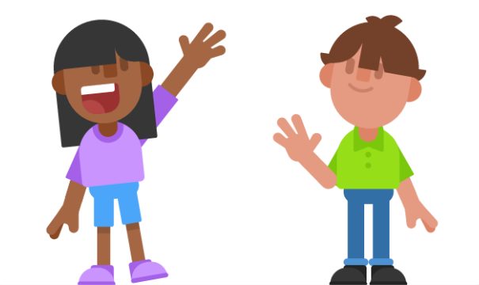

В українській мові ми питаємось Як справи? або Як Ви/ти якщо ми хочемо поговорити. А в США питання How are you? немає на увазі докладної відповіді і є просто формою привітання на кшталт Hello! На питання How are you? багато хто відповідає I'm fine, thanks, How are you?
Українською ми говоримо будь ласка коли ми когось про щось просимо або у відповідь на слова подяки. В англійській мові please вживається з проханням.
Speak English, please!
Розмовляйте українською,
будь ласка!
Але у відповідь на слова подяки зазвичай говорять You are welcome.
Thank you!
Дякую!
You are welcome!
Будь ласка!
Welcome також може означати ласкаво просимо.
Good morning, welcome!
Доброго ранку,
ласкаво просимо!